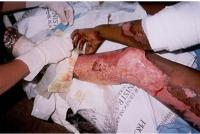

1. Call Emergency Numbers
2. Protect Burn Area
- Cover loosely with sterile, nonstick bandage or, for large areas, a sheet or other material that that won’t leave lint in wound.
- 
- Separate burned toes and fingers with dry, sterile dressings.
- Do not soak burn in water or apply ointments or butter, which can cause infection.
3. Prevent Shock
Unless the person has a head, neck, or leg injury, or it would cause discomfort:
- Elevate feet about 12 inches.
- Elevate burn area above heart level, if possible.
- Cover the person with coat or blanket.
- For an airway burn, do not place pillow under the person's head when the person is lying down. This can close the airway.
- Have a person with a facial burn sit up.
- Check pulse and breathing to monitor for shock until emergency help arrives.
4. See a Doctor
- Doctors will give oxygen and fluid, if needed, and treat the burn.